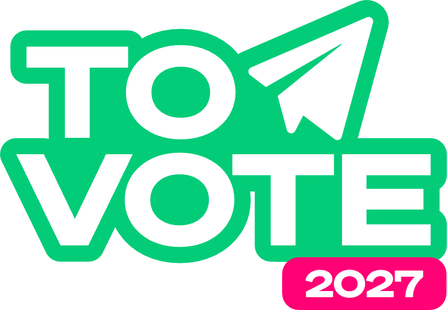

Prêt·e pour
le décollage ?
18 questions sur le vote, le CSE et les candidatures. Environ 4 minutes.
Ton contrôle avant vol.

LICENCE DE VOLÉLECTIONS CSE 2027
Quiz TO VOTE
18 questions sur le vote, le CSE et les candidatures. Environ 4 minutes.

LICENCE DE VOL